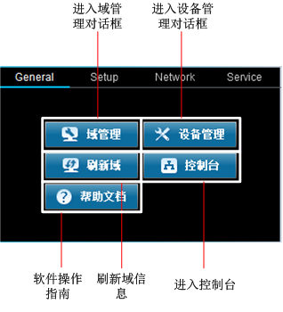
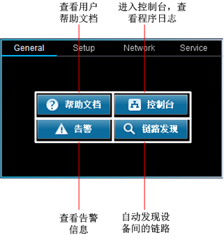
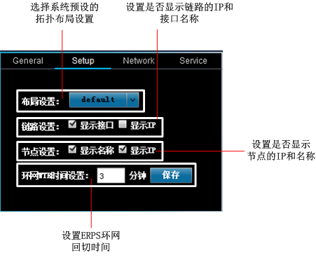
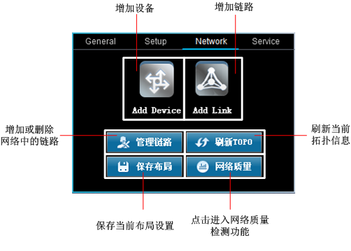
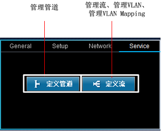

介绍Agile TE的主工作界面的组成结构和各个按钮含义。
用户完成进入Agile TE服务的操作后，浏览器将会打开程序的主工作界面。
比较项
General View
Agile TE View
功能差异
全局视图，用户需要在此视图下进行域管理和设备管理。是进入指定域的入口。
指定域视图，用户在此视图中进行相关的业务操作和功能维护操作。
界面布局
弹出菜单的功能有限，只能做少量的操作。
所有与业务相关的操作都在此视图的菜单中
所属视图
图标说明
General
此视图下，弹出菜单中只有二级菜单“General”可用。


Setup

Network

Service
